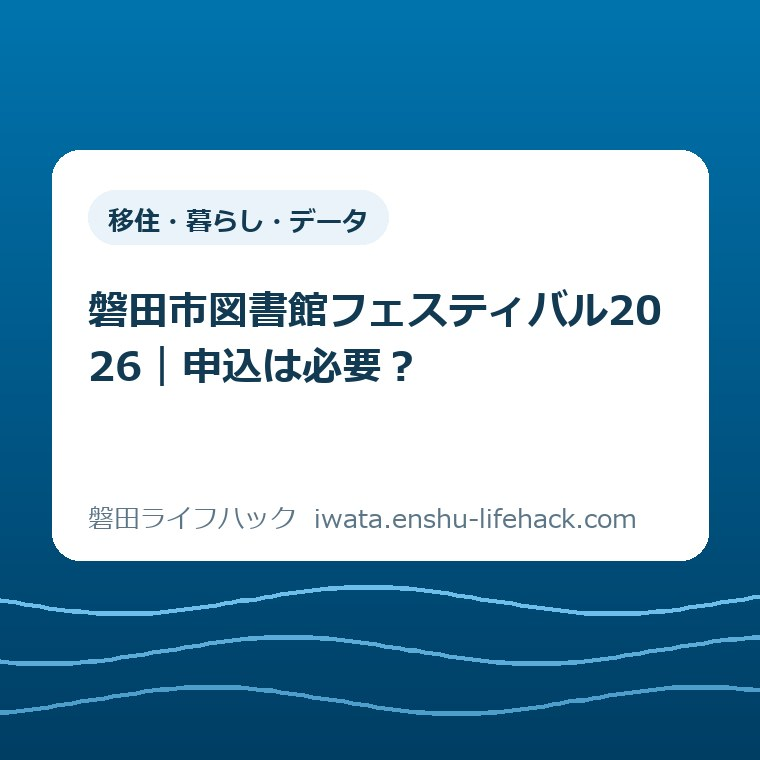

移住・暮らし・データ
磐田市図書館フェスティバル2026｜申込は必要？

この記事の要点
Q. 図書館フェスティバルは、予約せずに行っても参加できますか？
A. 企画ごとに確認が必要です。市公式は読書講演会など7企画を事前申込の対象として案内しています。11月28・29日の中央図書館の行事ですが、開催時間と各企画の時刻は別です。希望企画を1つ選び、対象・申込期限・受付状況を市公式の申込先で確認してください。
参加条件は企画ごと。まず希望を1つに絞る
図書館フェスティバル2026の参加条件は、企画ごとに確認が必要です。磐田市公式ページは、読書講演会など7企画について事前の申込みが必要と案内しています。会場へ行く予定を立てただけでは、希望する企画の参加枠を確保したことにはなりません。
家族で出かける日は、仕事の調整、きょうだいの予定、食事、送迎を合わせるだけでも手間がかかります。せっかく時間を空けたのに、会場で予約が必要だと知る。その行き違いを減らすため、この記事では申込が必要と明記された企画を先に整理します。
私は大石浩之（磐田市／不動産業）です。以下は市の公表内容を生活の段取りに置き換えた案内です。対象年齢や付き添い、受付状況など、個別の参加可否をこの記事だけで判断することはできません。最新の条件は市公式ページから確かめてください。
2026年11月8日に確認した市公式ページの更新日は11月6日です。開催日は11月28日（土曜）と29日（日曜）、会場は磐田市立中央図書館です。市の案内には企画ごとの申込リンクがあり、同じ行事名でも確認する入口は一つではありません。
今日は家族全員の予定を完成させなくても構いません。まず「何を見たいか、何に参加したいか」を1つ選ぶ。その名前を市公式ページで探すところまでを、小さな一歩にします。複数の企画を一度に申し込むことを前提にはしません。

11月28日の事前申込企画を確認する
11月28日には、市公式ページで4つの事前申込企画が案内されています。以下の時刻と定員は同ページの公表値です。定員の数字は残席数ではなく、申込リンクが掲載されていることも、現在受付中であることの証明にはなりません。
第39回こども読書講演会は、富安陽子氏の「本は不思議への扉」です。時刻は13時30分から15時まで、定員は130人と案内されています。講演名に「こども」とあっても、それだけで対象年齢や保護者の申込方法を決めつけず、申込先の条件を確かめます。
「音楽でいっしょにあそぼ」は10時から11時まで、定員は30組です。ここでの単位は「人」ではなく「組」です。家族何人までを1組として扱うか、きょうだいを連れてよいかなどは、本記事で確認できていません。参加人数の入力前に、申込先の説明を読む必要があります。
「図書館＆埋蔵文化財センターナイトツアー」は17時から18時30分まで、定員は20人です。通常の開催時間として書かれた17時までという案内とは別に、夕方以降の企画として時刻が示されています。帰宅や迎えの予定を昼の企画と同じにしないでください。
「けん玉体験」は10時30分から12時までと、14時30分から16時までの2回です。定員は各10人。2回分を合わせた定員と、自分が希望する回の定員は別です。家族で相談するときも、企画名に加えて午前か午後かを残すと、確認する対象がはっきりします。
28日の午前には、音楽とけん玉の時刻が一部重なります。午後も講演会とけん玉の時刻が一部重なります。これは掲載時刻から分かる事実で、同時参加できるという案内ではありません。移動や受付に必要な時間は未確認のため、空白時間まで決め打ちしないようにします。
11月29日の事前申込企画を確認する
11月29日には、市公式ページで3つの事前申込企画が案内されています。前日に申し込んだ企画の予約が、日曜の別企画にも通用するとは書かれていません。日付が変わると、企画名、開始時刻、定員も改めて照合する必要があります。
大道芸人オマールえびの「絵本×大道芸ライブ」は、10時30分から11時30分までと、14時30分から15時30分までの2回です。定員は各150人と案内されています。人数が多い企画でも、予約なしで参加できると読み替えることはできません。
「ボードゲーム体験」は10時から11時30分までと、13時30分から15時までの2回で、定員は各15人です。午前・午後で別の予定として扱い、希望する回を家族のメモに入れます。ゲームの種類や対象年齢はこの記事で確認していないため、内容を想像して約束しないようにします。
「図書館deヨガ」は9時30分から11時までと、11時30分から13時までの2回です。定員は各6人。持ち物や服装、対象者については市の申込先での確認が残ります。会場名が図書館であっても、普段の読書と同じ準備だけでよいとは限りません。
29日の午前は、ライブ、ボードゲーム、ヨガの時間帯が重なる部分があります。午後のライブとボードゲームにも重なりがあります。希望を全部書き出すことと、全部に参加する計画を作ることは別です。先に第一希望を1つ決めるほうが、確認する量を抑えられます。
市公式本文に並んだ7企画は、いずれも「事前の申込みが必要」とされた範囲です。一方で、そこに載っていない催しを一律に申込不要とする説明ではありません。行事全体の内容は公式チラシも参照するよう案内されています。本記事の一覧を、全企画の受付区分表として使わないでください。
開場時間・開始時刻・受付状況は別に読む
図書館フェスティバル全体の開催時間は9時から17時までです。ただし市公式は、28日の大人の映画会とナイトツアーは18時30分終了予定としています。全体の時間をそのまま個別企画の集合時刻や終了時刻に置き換えないことが、予定を立てるときの出発点です。
たとえばナイトツアーの開始は17時です。会場が9時から開いているという情報だけでは、いつ受付を済ませればよいかまでは分かりません。本記事で示す開始時刻と、申込後に届く案内や申込先に書かれた集合時刻は、分けて確かめる必要があります。
申込期限、先着か抽選か、残席、キャンセル時の連絡方法については、本記事では確認できていません。市公式本文で確認したのは、事前申込の対象、開催日時、定員、各申込先へのリンクです。分からない部分を「まだ大丈夫」「当日でもよい」と埋めることはしません。
申込先を開くときは、市公式ページの希望企画の欄から進むと、別の日程や別の催しとの取り違えを減らせます。検索結果に出た申込フォームだけを見て判断するより、企画名と開催日を親ページで一度照合するほうが、家族にも説明しやすくなります。
入力を終えた後の完了表示や案内も、実際の申込先の説明に従って確認してください。この記事は申込操作を実施した記録ではなく、申込完了画面や予約番号の形式も確認していません。応募したつもりと参加が確定した状態を同じにしないための線引きです。

良い点――企画ごとの入口と定員が見える
市公式の案内は、事前申込が必要な企画ごとに、日付、時刻、定員、申込リンクを分けて掲載しています。人と組の単位の違いも本文に残されています。家族が希望する内容から確認を始められるよう、入口が企画名で区切られている点は助かります。
私は、無料か有料かだけで休日の負担を測らないほうがよいと考えます。子どもの準備と送迎、仕事のやりくりには時間がかかります。予約が必要な企画を前もって識別できれば、家族が相談する順番を決めやすい。公表された定員にも、その実用上の意味があります。
同じ日に2回開かれる企画では、それぞれの時間帯が明示されています。午前は難しいが午後なら動ける家庭にも、判断の材料になります。ただし、選択肢が2回あることは、どちらかの枠が今も空いているという意味ではありません。案内の便利さと受付状況は分けて読みます。
普段どの図書館を使うかを探している場合は、別記事の磐田市の図書館6施設の使い分けが入口になります。今回は施設を比較する記事ではなく、中央図書館の特定の行事について、予約の確認を先に進めるための記事です。
注文したい点――未確認の条件を家族が補わなくて済む形に
市公式のイベント本文だけでは、今回確認した範囲で、各申込の締切や残席までは読み取れません。詳細は企画別の申込先で確かめることになります。このため、開催日が先だから受付にも余裕がある、という見方はできません。記事でも受付状況を固定した数字として載せません。
私は、参加を迷う家族にとって「対象」「付き添い」「締切」「受付状況」が同じ場所で見えると、調べ直す手間が小さくなると考えます。これは案内への私の要望です。申込先に説明がないと断定するものではなく、今回確認したイベント本文と未確認の詳細を区別した評価です。
問い合わせる場合も、行事全体について漠然と聞くより、「29日午後のボードゲームに、きょうだいも参加できるか」のように希望企画と確認したい条件を絞ると話が通じやすくなります。これは質問の作り方の例で、実際にその条件で参加できるという回答ではありません。
市公式ページの情報発信元は中央図書館で、電話は0538-32-5254です。電話をかける際は、ページ末尾の最新の受付時間も確認してください。夜の企画があることを、窓口への問い合わせも夜まで受け付けるという意味に広げないようにします。
同日の文化財イベントは別の申込として扱う
11月29日は、中央図書館の催しとあわせて、埋蔵文化財センターなどで文化財フェスティバルも開催されます。市公式の文化財イベントページも図書館との同日開催を案内しています。同じ地域の行事でも、会場や企画の条件を一つにまとめて扱うことはできません。
文化財イベントの公式案内では、職業体験の申込期間は10月28日から11月6日までとされています。11月8日の時点で、その記載上の期限は過ぎています。図書館の行事を調べている途中で見つけても、こちらの申込リンクがあることだけを理由に、受付中だと判断しないでください。
会場を増やすほど、時間の重なりや移動の確認も増えます。私は、今回は図書館で参加したい企画を一つ決めてから、余裕があれば別会場の案内を見る順番を勧めます。一日の計画に催しを詰め込むことを、家族の休日の成果にしなくてよいと思います。
別会場の行事の趣旨は、いわた文化財フェスティバル2026の記事で紹介しています。過去の記事に書かれた受付期間を現在の受付中表示と混同せず、参加条件はリンク先の市公式の最新案内で確認してください。
対案・結論――今日は希望企画を一行で残す
今日できる確認は、「希望する企画名・参加したい日・午前か午後か」を一行で残すことです。たとえば「29日の午後のライブを希望」と書けば、次に確かめる場所が定まります。まず予定の候補を作るだけで、予約が取れる前から参加を約束する必要はありません。
その一行を市公式の企画欄と照合し、申込先で対象年齢、付き添いの扱い、締切、受付状況を読みます。条件が合わなければ、無理に予定を変えて申し込む必要はありません。家族が行ける時間と企画の条件が重なるかを確かめるのが先です。
人と組の数え方が分からないときは、家族側で都合よく解釈して入力しないようにします。必要なら希望企画の名前を添えて中央図書館に確認する。その確認が済むまでは、家族のメモにも「未確定」と残しておくと、別の人が予約済みと受け取るのを防げます。
申込後は、実際の案内に従って参加の状態を確かめ、家族には必要な日付と時刻だけを共有します。連絡先や入力画面の個人情報まで共有する必要はありません。誰が付き添うかも、予約が取れた事実と合わせて話すと、当日の役割を決めやすくなります。
行かない場合にも、本に触れる選択肢は残ります。電子図書館と紙の本の比較記事では、家で読むか、実物を選ぶかという別の判断を扱っています。催しへの参加と、読書を楽しむことを一つの条件にまとめないための補助線です。
大石の視点――参加枠より先に、動ける時間を見る
私は、家族が動ける時間を先に見るほうが、申込の負担を小さくできると考えます。不動産の仕事でも、書類がそろうことと、関係する人が同じ日に動けることは別の問題です。ここで述べているのは私の考えであり、図書館で実際に受けた相談や参加経験の紹介ではありません。
言い切れるのは、申込リンクを見つけただけでは参加枠を確保したことにならない、という点です。意外なのは、図書館の行事でも企画によって定員の単位が「人」と「組」に分かれることです。小さな違いですが、家族で申し込むときには読み飛ばせません。
一方で私は、子どもの関心を先に聞くか、家族が動ける時間を先に示すかは迷います。希望を聞いた後に条件が合わないと分かれば、がっかりさせるかもしれません。だから今回は、候補を一つ選び、条件を確認してから参加を決める順番を提案します。
11月28・29日の予定を今日すべて固める必要はありません。希望を一行にして、まだ分からない条件を分かる形で残せれば十分です。制度や行事の条件は個別に変わるため、最後は必ず磐田市公式ページと、そこから案内された申込先で確認してください。
よくある質問
全部の催しに事前申込みが必要ですか？
市公式は読書講演会、音楽、ナイトツアー、けん玉、絵本×大道芸、ボードゲーム、ヨガの7企画を事前申込の対象として案内しています。これ以外を一律に申込不要とする一覧ではありません。希望企画を市公式で確認し、詳細は公式チラシや申込先の条件を確かめてください。
申込リンクがあれば、まだ申し込めますか？
リンクの掲載だけでは受付中と判断できません。この記事では申込期限や残席、先着・抽選の方式を確認していません。参加したい日と回を決め、市公式から該当する申込先に進んで受付状況を確認してください。入力や応募を終えたことと、参加確定も区別して扱います。
文化財フェスティバルと申込は共通ですか？
同日開催という案内だけで共通の申込とは扱えません。図書館と文化財施設では企画と参加条件が異なります。文化財課職業体験の記載上の申込期限は11月6日で、11月8日時点では過ぎています。図書館の希望企画は図書館側の市公式案内から個別に確認してください。
参考にした公式情報
- 図書館フェスティバル2026／磐田市（2026年11月8日確認）
- いわた文化財フェスティバル2026／磐田市（2026年11月8日確認）
最終確認日：2026-11-08 ／ 本記事は公表情報と執筆者の見解を分けて記載しています。制度・数値・公開状況は変更される場合があるため、最新情報は磐田市公式ページでご確認ください。